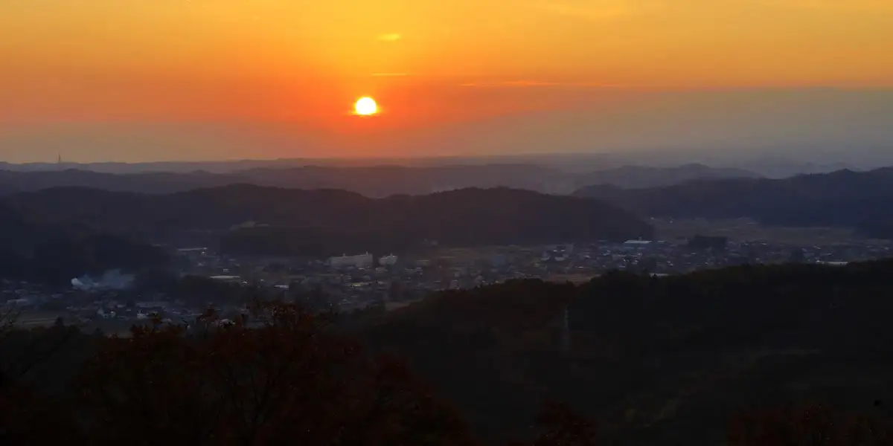
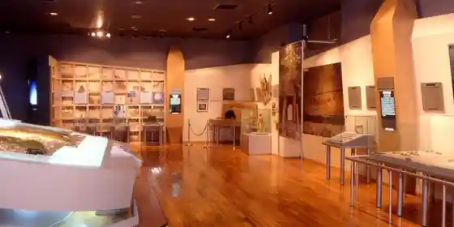
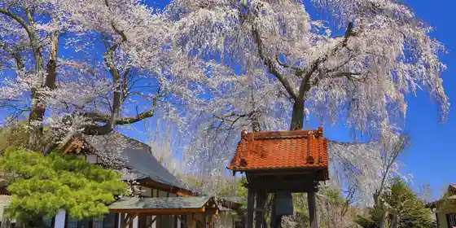
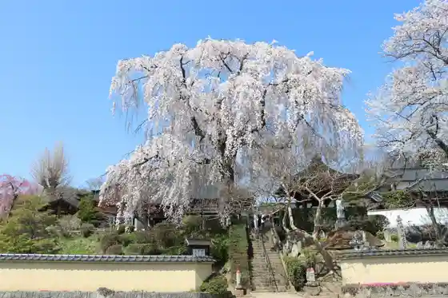
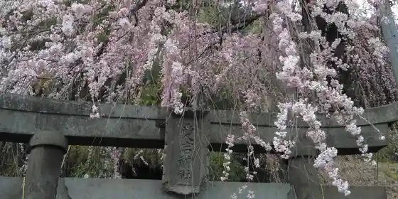

Japan / Fukushima / Izumizaki
Izumizaki, Fukushima
Izumizaki · Fukushima
Izumizaki
Highlighted on the Fukushima map.

Sights
Karasu Toge Chojo
Izumizaki, Fukushima · 0248-53-2430 · Official / source link
Izumizaki Museum
Izumizaki, Fukushima · 0248-53-4777 · Official / source link

Joganji no Shidare Sakura
Izumizaki, Fukushima · 0248-53-2430 · Official / source link

Masa Ken Tera no Shidare Sakura
Izumizaki, Fukushima · 0248-53-2430 · Official / source link

Karasu Toge no Autumn Leaves
Izumizaki, Fukushima · 0248-53-2430 · Official / source link
Atago Shrine no Shidare Sakura
Izumizaki, Fukushima · 0248-53-2430 · Official / source link

Izumizaki Kantoriivirejji
Izumizaki, Fukushima · 0248-53-4211 · Official / source link
Karasu Toge (Karasu Toge Promenade)
Izumizaki, Fukushima · 0248-53-2430 · Official / source link
Izumizaki Yokoana
Izumizaki, Fukushima · 0248-53-4777 · Official / source link
Sekiwa Kyu Kanga Iseki
Izumizaki, Fukushima · 0248-53-4777 · Official / source link
Karasu Toge Inari Shrine
Izumizaki, Fukushima · 0248-53-2549 · Official / source link